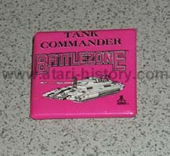

(Page 2)
Brass Fuji from Jack Tramiel's Speaker
Podium, Brass Paperweight

Battlezone Pin, Atari 2600/5200 Centipede
Pin (82'), Atari Interactive Centipede(98')

Very Heavy Solid Brass "You and Atari:
Number 1" Award
Fuzzy stick-on Centipede from Atari
Atari 2600 Dig Dug Balloon
Fyling High Ataritel Eagle Pin
Atari sew-on patch, 2 different Atari
window stickers and Atari Ms. Pac Man
for the Atari 2600 stickers